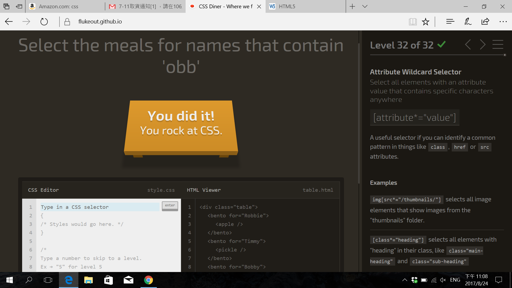

Four-Colored Square
The Snapshot of Css Diner after you win!

Course Suggestion
-
Adding more time to practice the syntax rules we learned from classes. That is, wirting more codes during the class if possible
-
More talking about the concepts of web designing, cause that is also an important part in practice. For example, should we need a server machine or just use online server?
-
How to build a web like "JWeb.ga," with so much functions such as login, data storage, message posting, searching, etc.
-
What is the next step after this course ends? Javascript? PHP + MySQL? Or others?
-
What is the difference between front-end and back-end developer?
-
Can we ask you for advices if we have any problems about building webs in the future?
What do you want to learn in this coruse?
- How to bulid a web?
- How to update a web?
- How to upgrade a web
- How to maintain a web?
- How to troubleshoot a web if it doesn't work?